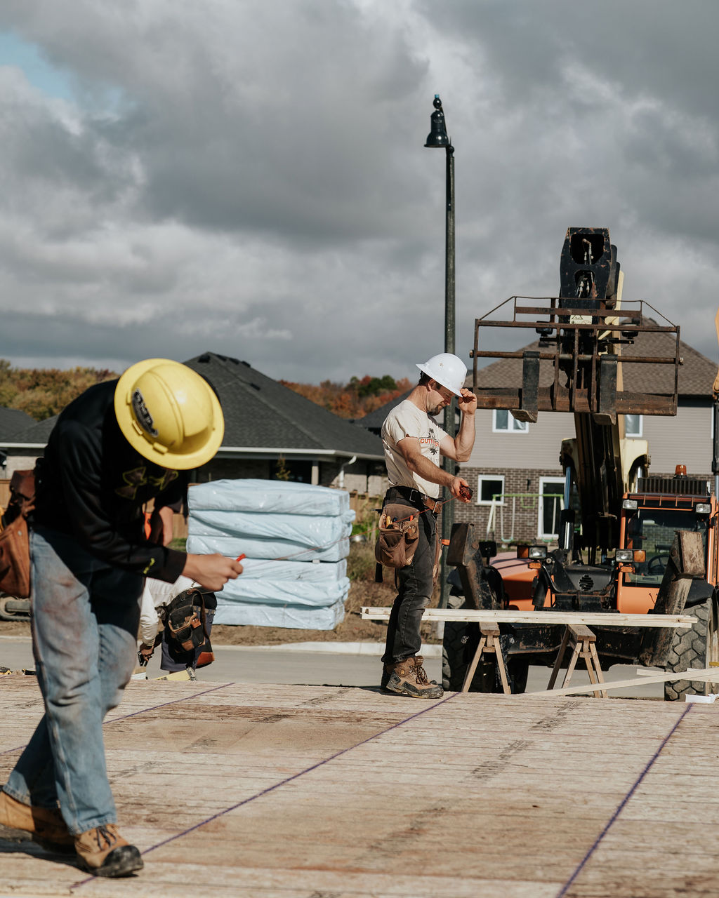
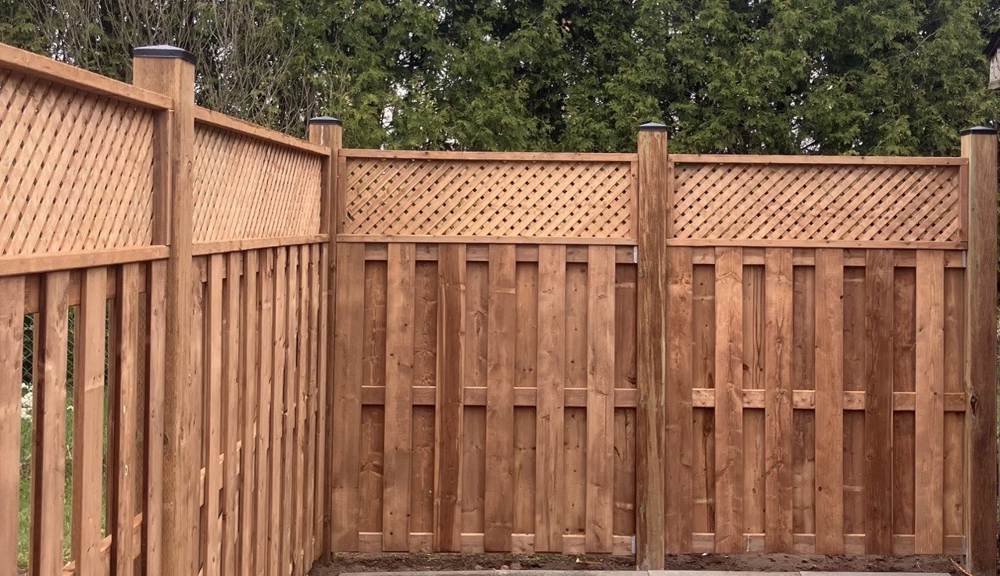
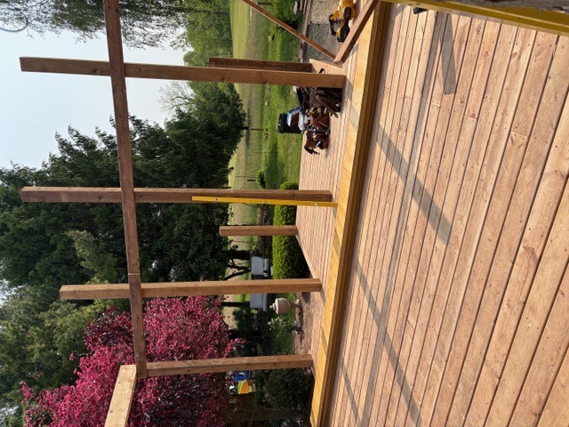
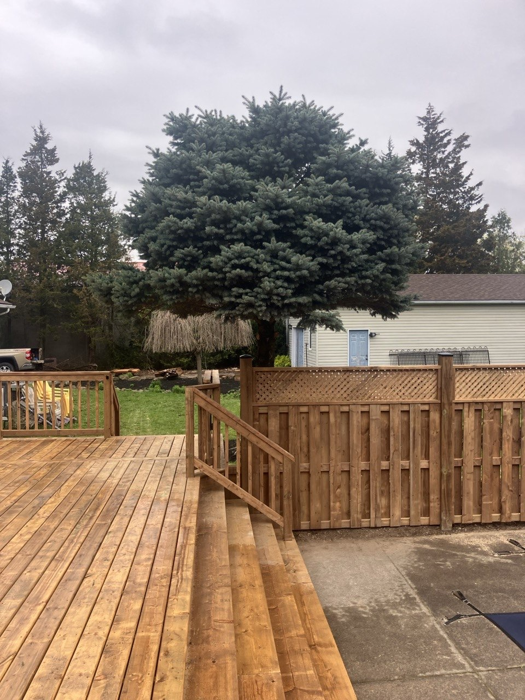
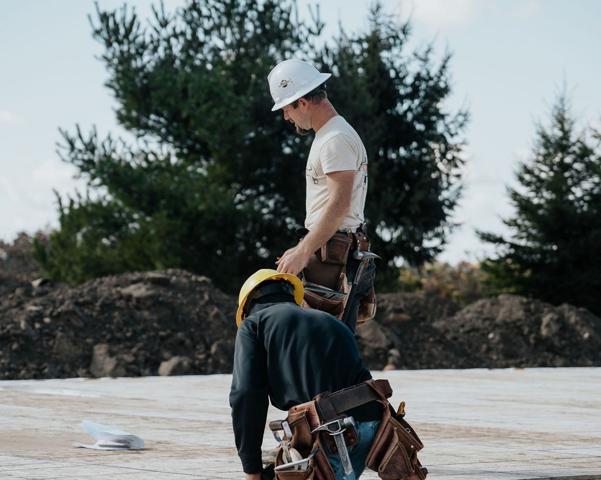

Decks
Outdoor spaces built for everyday use, weather exposure, and a clean connection to the home.
Learn MoreRefinishing
Protect and refresh decks, fences, and exterior wood before weathering becomes a bigger problem.
Wood protection
Decks, fences, and other exterior wood need regular protection from moisture, UV exposure, and seasonal wear. Refinishing can improve colour, reduce weathering, and help extend the useful life of outdoor wood surfaces.
Cutting Edge Carpentry focuses refinishing around practical exterior wood protection, not cosmetic promises that ignore the condition of the structure underneath.


Project fit
These projects are a fit when the carpentry scope, site conditions, and project lead are clear enough to plan the work properly.
Useful when a deck has faded, dried out, or started showing surface wear.
A fit for exterior fence boards that need renewed colour and protection.
Support for exterior woodwork that needs cleaning, staining, or protective maintenance.
On site
Project photos break up the planning details with actual framing, construction, and exterior carpentry work.



Planning notes
These are the details that make the first quote conversation and the build sequence cleaner.
Process
A clear sequence helps keep pricing, scheduling, and handoffs easier to manage.
Review the deck, fence, or exterior wood surface and note repair concerns.
Plan cleaning, drying, sanding or prep needs, stain type, and weather timing.
Apply the agreed exterior wood protection with attention to coverage and finish quality.
Review care timing and signs that the wood may need future service.
Related services
Many residential projects overlap. These related pages help narrow the right fit.
Outdoor spaces built for everyday use, weather exposure, and a clean connection to the home.
Learn MoreClean, durable fencing for privacy, property lines, and exterior curb appeal.
Learn MoreRoofed outdoor structures and porch carpentry planned around access, structure, and weather protection.
Learn MoreFAQ
Common questions about refinishing and residential carpentry support.
Refinishing is worth reviewing when wood is fading, absorbing water quickly, drying out, or losing its protective finish. Weather and drying conditions affect timing.
No. If wood is badly rotted, unstable, or structurally unsafe, repair or replacement may be needed before refinishing makes sense.
Rain, humidity, temperature, sun exposure, and drying time all affect cleaning, prep, staining, and sealing. The work should be scheduled around suitable conditions.
Send photos of the deck, fence, or exterior wood, the property location, rough dimensions, known problem areas, age of the wood if known, and the finish you want.
Refinishing quote
Send the project details and Cutting Edge Carpentry will help you take the next step.
Location
Serving London, Straffordville, and nearby Southwestern Ontario with residential carpentry and construction.